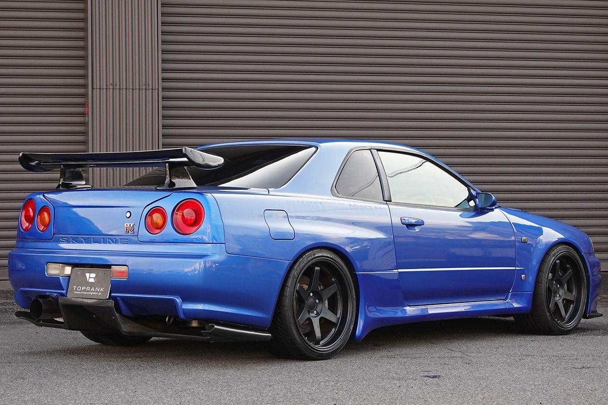
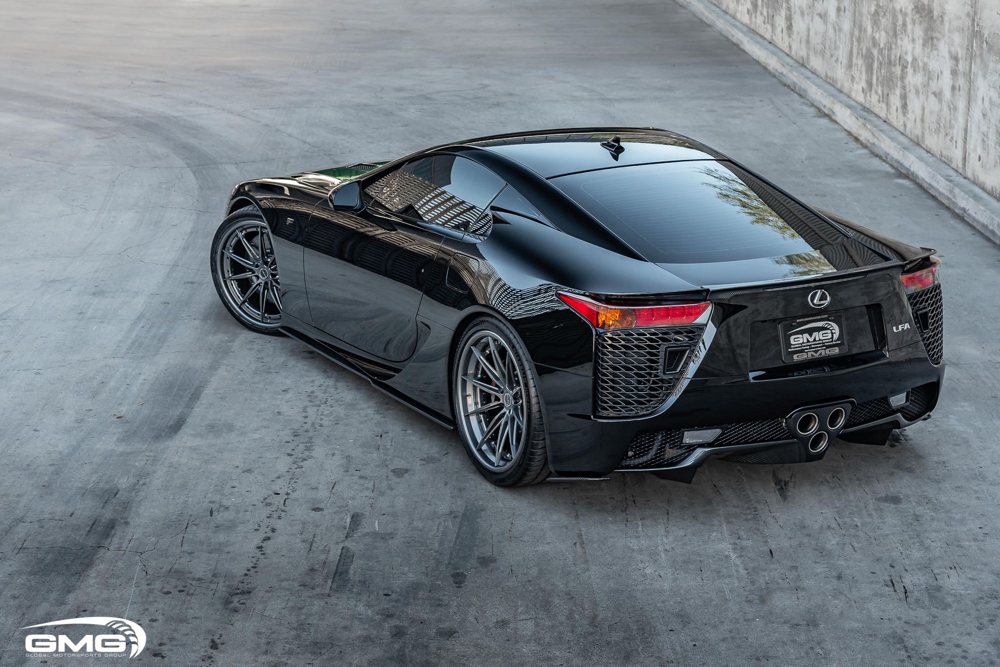
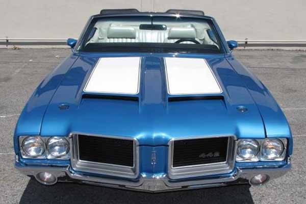
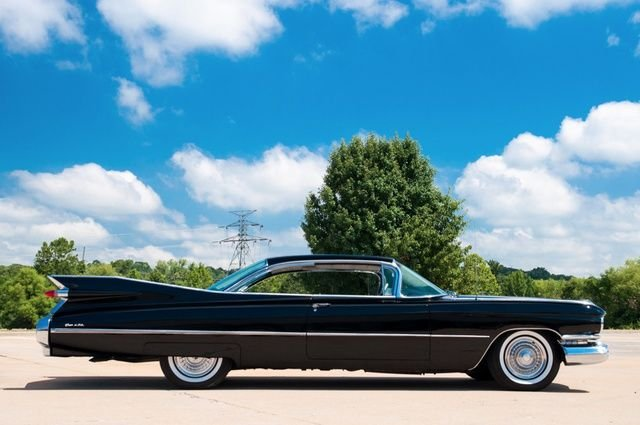

The Audi R8 is a striking supercar that blends cutting-edge technology with luxurious design,
featuring a mid-engine layout and an unmistakable silhouette. Powered by a choice of potent V8 or
V10 engines, the R8 delivers exhilarating performance, reaching 0 to 60 mph in just around 3
seconds. With its Quattro all-wheel-drive system, the R8 offers exceptional handling and stability,
making it a favorite among driving enthusiasts.
7. 2000 Nissan Skyline GTR

The 2000 Nissan Skyline GTR, commonly referred to as the R34, is an iconic sports car celebrated for its remarkable performance and advanced engineering. It features a potent 2.6-liter twin-turbo inline-six engine, producing approximately 280 horsepower, paired with the sophisticated ATTESA all-wheel-drive system for superior handling and traction. With its aggressive design and motorsport pedigree, the R34 has earned a legendary status among enthusiasts and remains a symbol of Japanese automotive excellence.
8. Lexus LFA

The Lexus LFA is a high-performance supercar known for its stunning design and exhilarating driving experience, powered by a 4.8-liter V10 engine that produces 553 horsepower. With a lightweight carbon fiber construction and a meticulously engineered chassis, the LFA can accelerate from 0 to 60 mph in just 3.6 seconds, delivering a thrilling sound and dynamic performance. Limited to just 500 units, the LFA is celebrated not only for its engineering prowess but also for its status as a groundbreaking entry in the luxury sports car market.
9. 1972 Oldsmobile Cutlass 442

The 1972 Oldsmobile Cutlass 442 is a classic American muscle car that blends power with stylish design, featuring a sleek coupe body and distinctive trim. Powered by a robust 455-cubic inch V8 engine, it delivers impressive performance and a thrilling driving experience typical of the muscle car era. With its iconic stance and sporty features, the Cutlass 442 remains a sought-after collector's item, embodying the spirit of 1970s American automotive culture.
10. 1959 Cadillac Coupe

The 1959 Cadillac Coupe DeVille is a quintessential symbol of American luxury, characterized by its striking tailfins and bold chrome accents that epitomize the era's design aesthetic. Powered by a formidable 390-cubic inch V8 engine, it offers a smooth and powerful ride, making it a favorite among luxury car enthusiasts. With its spacious interior and lavish features, the Coupe DeVille represents the height of 1950s automotive elegance and remains a cherished classic today.